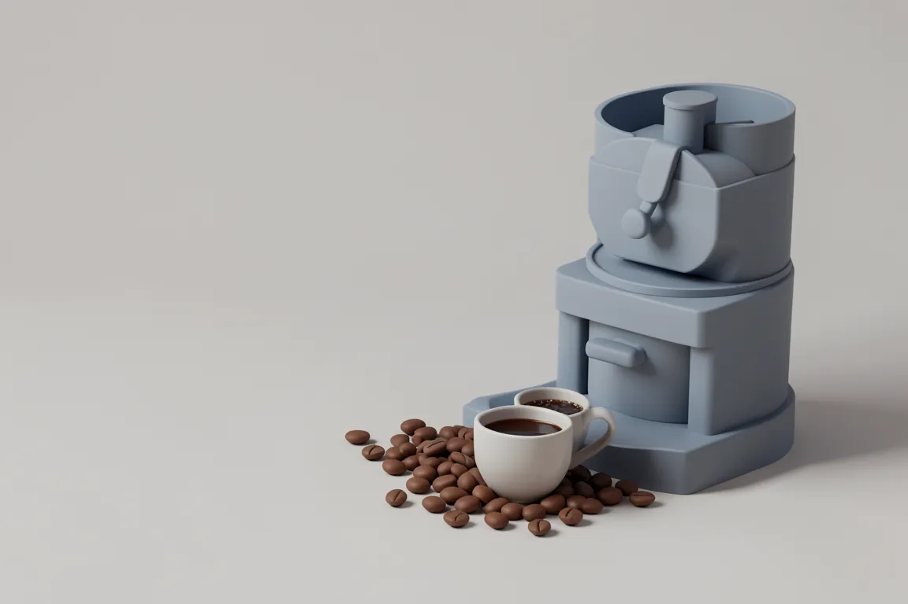

веб · 2019–2021 · также: Мягкий UI, Новый скевоморфизм
Монохромные поверхности, будто выдавленные из фона или вдавленные в него, из светлой и тёмной теней на противоположных углах. Появился на Dribbble в конце 2019 года как мягкий ответ плоскому дизайну.

Главная идея
Интерфейс может быть осязаемым без подражания предметам, если каждый элемент отлит из того же материала, что и страница за ним.
Принципы дизайна
Давайте фону и каждой поверхности одну заливку, чтобы форму задавали одни тени.
Парьте две тени на каждом приподнятом элементе: тёмную 8px 8px 16px и светлую -8px -8px 16px, с источником света сверху слева.
Инвертируйте обе тени ключевым словом inset, чтобы показать нажатое, выбранное состояние или поле ввода.
Держите радиус углов 16–32px на карточках и 999px на таблетках, чтобы края ловили тень ровно.
Ограничьте палитру одним средне-светлым нейтральным, его более тёмным и более светлым оттенком и одним насыщенным акцентом меньше чем на 5% поверхности.
Используйте только три уровня высоты: плоский, приподнятый со смещением 8px и вдавленный inset со смещением 4px.
Ставьте акцент на значок, подпись или тонкий индикатор, потому что форму уже отмечает тень.
Антипаттерны
Жёсткие чёрные границы или контуры 1px вокруг приподнятых элементов
Чисто белый или чисто чёрный фон, гасящий одну из двух теней
Приподнятые и вдавленные элементы с разными цветами фона
Светло-серый текст на светло-сером фоне с контрастом ниже 4,5:1